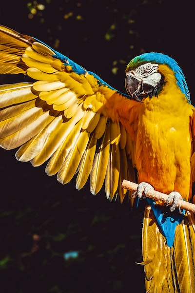

Birds are very special animals that have particular characteristics which are common amongst all of them. For instance, all of them have feathers, wings and two legs. Similarly, all birds lay eggs and are warm-blooded . They are very essential for our environment and exist in different breeds
Most birds are quite shy, so you need at least 200mm (300mm is better) to take pictures of them. Longer focal length not only lets to photograph birds from larger distance, it also gives more blurred background. However more millimeters (or larger aperture) means more expensive, larger and heavier lens
 contact